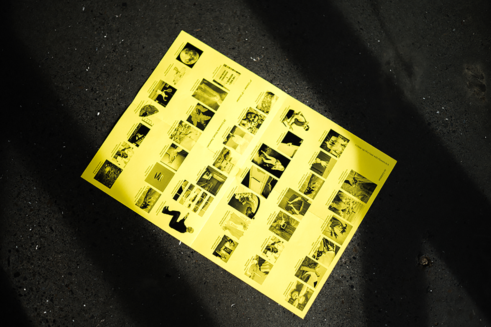
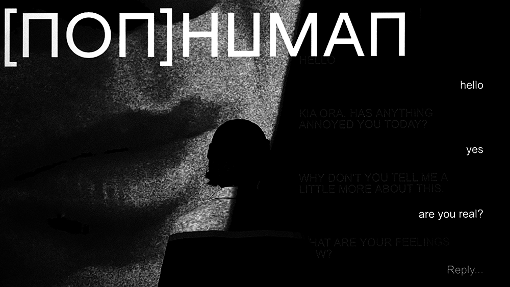
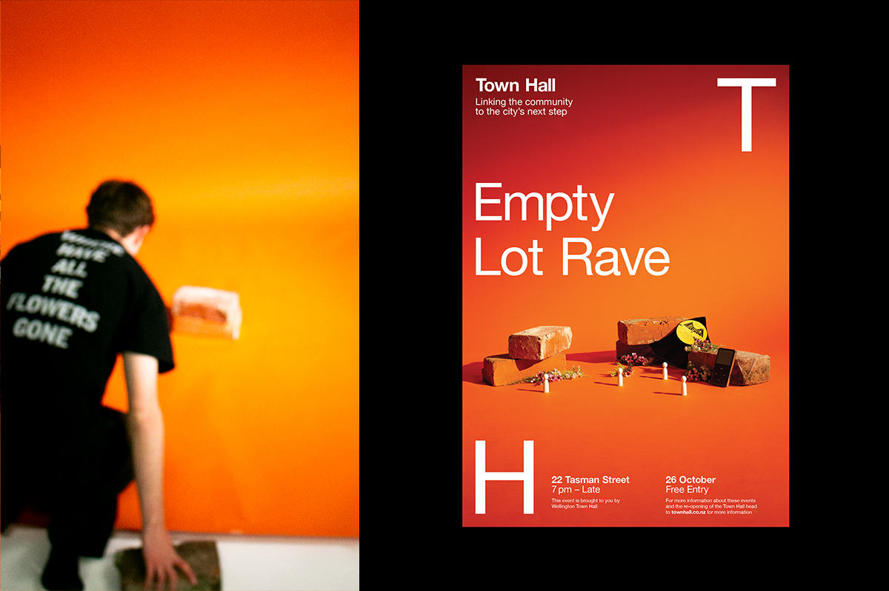

Max Quinn-Tapara
A Close-up of a Vase with Flowers in it.
● Exhibition, Branding

i saw the greatest minds of my generation destroyed by the internet.
● Development, Publication

Heldane Specimen
● Product, Publication

WCC Town Hall
● Photography, Branding, Development
